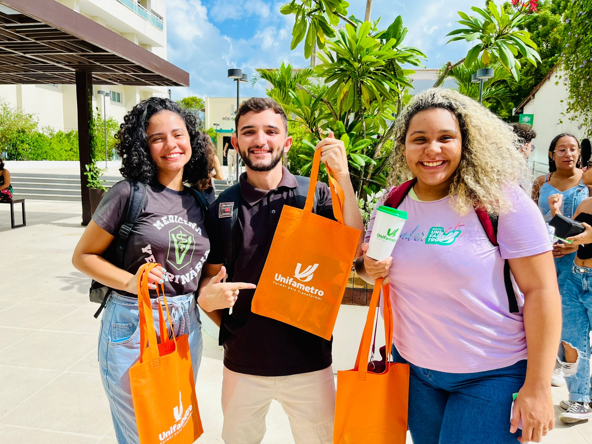

Diagnóstico
Análise da realidade da comunidade e levantamento de demandas.
Central de Extensão Curricular
Prof. Abraão Henrique S. Rosal
Acesso rápido aos materiais oficiais, regras de avaliação, calendário institucional e orientações para os projetos de extensão da comunidade acadêmica FAMETRO.
Base institucional
A extensão universitária é um componente obrigatório da graduação e conecta a formação acadêmica à comunidade e à sociedade. A proposta é aplicar conhecimentos estudados em sala em projetos com impacto real, registro de evidências e acompanhamento institucional.
A Central de Extensão Curricular organiza as atividades acadêmicas, orienta os fluxos de entrega e oferece suporte aos estudantes e supervisores. A coordenação do projeto de ADS está sob responsabilidade do Prof. Abraão Henrique S. Rosal.

Análise da realidade da comunidade e levantamento de demandas.
Definição e execução das ações extensionistas pela equipe.
Apresentação dos resultados e do impacto social do projeto.
Produção institucional da equipe e reflexão individual.
Acesso rápido
Arquivos de referência para consulta dos alunos. Baixe os modelos antes de preencher e acompanhe sempre o cronograma oficial.
Central de Extensão Curricular 2026.1.
PDFDatas, prazos e marcos institucionais do semestre.
PNGComprovação, envio, pontuação e frequência.
DOCXPlanejamento, diagnóstico e evidências do projeto.
DOCXDesenvolvimento, participação, recursos e evidências.
DOCXVivência pessoal, aprendizagem e reflexão do aluno.
DOCXModelo para registro de presença com o supervisor.
Temas atualizados
Lista atualizada dos projetos EAD e presenciais. Os códigos foram mantidos como referência acadêmica conforme informado e podem ser editados quando a Instituição publicar a versão final do semestre 2026.1.
Componentes curriculares informados para a modalidade EAD.
UNIFAMETRO FORTALEZA
UNIFAMETRO FORTALEZA
UNIFAMETRO FORTALEZA
UNIFAMETRO FORTALEZA
UNIFAMETRO FORTALEZA
UNIFAMETRO FORTALEZA
Temas oficiais presenciais vinculados ao código CEXTEF.
UNIFAMETRO FORTALEZA
UNIFAMETRO FORTALEZA
UNIFAMETRO FORTALEZA
UNIFAMETRO FORTALEZA
UNIFAMETRO FORTALEZA
UNIFAMETRO FORTALEZA
UNIFAMETRO FORTALEZA
UNIFAMETRO FORTALEZA
Calendário oficial
Linha do tempo e tabela de consulta rápida baseadas no Cronograma Central de Extensão Curricular 2026.1.
Encontros da extensão
Use estes horários como referência para as orientações presenciais e online com o Prof. Abraão.
Presencial
Encontros presenciais das 10h às 12h.
10h às 12hOnline
Reunião Extensão - Professor Abraa, das 10h às 12h, no fuso America/Fortaleza.
10h às 12h Entrar no Google MeetOnline
Reunião Extensão - Professor Abraa, das 18h às 19h, no fuso America/Fortaleza.
18h às 19h Entrar no Google MeetEncontro Pedagógico, reunião com supervisores e início das aulas.
Formação das equipes e primeira etapa do relatório de extensão.
Abertura do link, segunda etapa do relatório e envio do E-pôster.
Divulgação da grade e apresentações no III Simpósio de Extensão.
Relatório individual, resumos expandidos e lançamentos de notas.
Envio dos certificados de participação no III Simpósio.
| Data | Evento | Tipo |
|---|---|---|
| 02/02 a 06/02 | Encontro Pedagógico | Institucional |
| 06/02 | Reunião com os supervisores de extensão | CEC |
| 08/02 a 14/02 | Provas de AV1 | Avaliação |
| 23/02 | Início das aulas | Acadêmico |
| 23/02 a 08/03 | Prazo para formação de equipes | Equipe |
| 27/03 | Entrega da primeira etapa do relatório de extensão | Relatório |
| 15/04 | Abertura do link para envio do E-pôster | Simpósio |
| 17/04 | Entrega da segunda etapa do relatório de extensão | Relatório |
| 27/04 | Entrega do E-pôster para o III Simpósio | Simpósio |
| 13/05 a 19/05 | Provas de AV2 | Avaliação |
| 15/05 | Divulgação da grade de apresentação das equipes | Simpósio |
| 25/05 a 29/05 | III Simpósio de Extensão Curricular | Simpósio |
| 01/06 | Entrega do relatório individual | Relatório |
| 05/06 | Entrega dos resumos expandidos apresentados na banca prêmio | Simpósio |
| 10/06 a 16/06 | Provas de AV3 | Avaliação |
| 15/06 | Data limite para lançamento das notas AV1, AV2 e AV3 | Notas |
| 17/06 a 19/06 | 2ª chamada de AV3 para disciplinas EAD | Avaliação |
| 17/06 a 23/06 | 2ª chamada de AV3 para disciplinas presenciais | Avaliação |
| 31/08 | Envio dos certificados de participação no III Simpósio | Certificados |
Regras CEC
As regras abaixo sintetizam o material oficial da Central de Extensão Curricular e devem orientar a organização das equipes.
Cada aluno deve comprovar participação mínima em 4 orientações com o supervisor ao longo do semestre.
Devem ser registradas 2 atividades externas in loco, com fotos sem edição como evidência.
As atividades devem ser enviadas exclusivamente pelo Moodle, nas atividades abertas pelo supervisor.
Fotos editadas, sem contexto ou sem interação com a comunidade podem comprometer a validação do projeto.
Evidências não editadas, modelo institucional e conteúdo original.
Vivência pessoal, modelo institucional e reflexão original.
Presença da equipe e E-pôster institucional via Moodle.
4 encontros com supervisor e 2 visitas externas comprovadas.
Perguntas frequentes
Respostas institucionais para consulta rápida durante o semestre 2026.1.
Use a seção Materiais desta página para acessar a apresentação oficial, o cronograma, a imagem de regras, os modelos de relatório em equipe, o relatório individual e a lista de frequência.
O envio deve ser feito exclusivamente pelo Moodle, apenas nas atividades abertas pelo supervisor. Arquivos enviados por outros canais podem não ser considerados para avaliação.
Use fotos não editadas, com legenda e contexto da ação extensionista. As evidências devem mostrar interação com a comunidade, participação do público, uso de materiais e ocupação do espaço da instituição parceira ou comunidade.
A regra oficial indica participação mínima em 4 orientações por semestre, comprovadas no relatório individual. Também devem constar 2 visitas externas comprovadas.
A nota total soma 10 pontos: relatório em equipe vale 2 pontos, relatório individual vale 3 pontos, Simpósio de Extensão vale 4 pontos e frequência vale 1 ponto.
O Simpósio exige presença da equipe e E-pôster institucional obrigatório, enviado conforme prazo e orientação do Moodle. Consulte a grade de apresentação quando for divulgada.
O relatório em equipe registra diagnóstico, planejamento, desenvolvimento do projeto e evidências coletivas. O relatório individual registra a vivência pessoal do aluno, suas funções, aprendizagens, reflexão teórico-prática e evidências da sua participação.
Consulte a seção Calendário desta página e o PDF do cronograma oficial em Materiais. Se houver divergência entre informações, prevalece o Cronograma Oficial da Instituição FAMETRO.
Não necessariamente. Os projetos EAD aparecem organizados por componente curricular e carga horária, enquanto os presenciais aparecem por temas oficiais vinculados ao código CEXTEF.
Atendimento
Centralizar as dúvidas ajuda todos os participantes a terem acesso às mesmas respostas e orientações.
Espaço recomendado para esclarecimentos detalhados e alinhamentos sobre projetos, evidências, relatórios e cronograma.
Canal para dúvidas que podem beneficiar outras equipes e facilitar a consulta coletiva das respostas.
Entrar no grupo de extensãoReferência para cronograma, Moodle, modelos, avisos formais e informações oficiais do semestre.
Contato oficial
Professor do Projeto de Extensão FAMETRO - ADS
abraao.rosal@professor.unifametro.edu.br Entrar no grupo de extensão